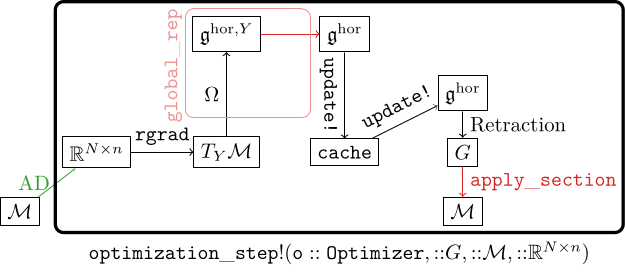

Optimization on Homogeneous Spaces
The manifold optimizers in this package implement [10]. This page summarizes that paper: what problem it solves, how it solves it, and which function in GeometricOptimizers corresponds to which operation in the algorithm.
The problem: Adam has no coordinate-free formulation
Standard optimizers such as gradient descent generalize to Riemannian manifolds without much trouble: they only need a gradient and a retraction, both of which are defined intrinsically. Adam does not. Adam assigns one learning rate per coordinate, because its second moment $\mathcal{B}^\mathtt{cache}_2$ is accumulated and divided entry by entry. On a manifold there is no intrinsic coordinate system, so "coordinate-wise update" is not a well-defined operation, and the cache cannot simply be carried from one tangent space $T_{Y^{(t)}}\mathcal{M}$ to the next.
Existing generalizations resolve this either by restricting to Lie groups — where the Lie algebra $\mathfrak{g}$ is a global tangent space and the cache can live there — or by keeping the cache in an ambient vector space and projecting back onto the manifold at every step, which either loses the vector-valued second moment or introduces a projection.
The idea: a global tangent space for homogeneous spaces
A homogeneous space is a manifold $\mathcal{M}$ on which a Lie group $G$ acts transitively. Fixing a distinct element $E \in \mathcal{M}$, every $Y \in \mathcal{M}$ is $Y = \Lambda{}E$ for some $\Lambda \in G$, and a section is a map $\lambda: \mathcal{M} \to G$ with $\lambda(Y)E = Y$. This is GlobalSection.
For the StiefelManifold $St(n, N) = \{Y \in \mathbb{R}^{N \times n} : Y^TY = \mathbb{I}_n\}$ the group is $G = SO(N)$, the distinct element is $E = [\mathbb{I}_n; \mathbb{O}]$, and the section is computed by completing $Y$ to an orthonormal basis with a $QR$ decomposition: $\lambda(Y) = [Y, Y_\perp]$.
The kernel of $\mathfrak{g} \to T_Y\mathcal{M}$ is the vertical component $\mathfrak{g}^{\mathrm{ver},Y}$; its orthogonal complement in $\mathfrak{g}$ is the horizontal component $\mathfrak{g}^{\mathrm{hor},Y} \simeq T_Y\mathcal{M}$. Evaluating this at the distinct element gives the global tangent space representation
\[\mathfrak{g}^\mathrm{hor} \equiv \mathfrak{g}^{\mathrm{hor},E},\]
which is the same space for every $Y$. For the Stiefel manifold it has the sparse form
\[\mathfrak{g}^\mathrm{hor} = \left\{ \begin{bmatrix} A & -B^T \\ B & \mathbb{O} \end{bmatrix} : A \in \mathbb{R}^{n \times n} \text{ skew-symmetric}, \ B \in \mathbb{R}^{(N-n) \times n} \text{ arbitrary} \right\},\]
which is what StiefelLieAlgHorMatrix stores — only $A$ and $B$, never the full $N \times N$ matrix. The analogue for the Grassmann manifold is GrassmannLieAlgHorMatrix.
This is the key point of the paper. The Adam cache is kept in $\mathfrak{g}^\mathrm{hor}$, a fixed vector space that does not depend on the current iterate. Coordinate-wise operations are meaningful there, so the Adam update can be written down unchanged. And because
\[\dim{}St(n, N) = \dim\mathfrak{g}^{\mathrm{hor},Y} = \dim\mathfrak{g}^\mathrm{hor} = n(N - n) + \tfrac{1}{2}n(n-1),\]
no dimensions are added anywhere and no projection is needed — unlike approaches that carry the cache in $\mathbb{R}^{N \times n} \times \mathfrak{so}(n)$.
The algorithm
One step, for weights $Y^{(t)}$, a cache, the Euclidean gradient $\nabla{}L$ from automatic differentiation, optimizer parameters $\Xi$ and a section $\Lambda^{(t)}$:
\[\begin{aligned} \Delta^{(t)} &\gets \mathtt{rgrad}(Y^{(t)}, \nabla{}L) && \text{Riemannian gradient, an element of } T_{Y^{(t)}}\mathcal{M} \\ \mathcal{B}^{(t)} &\gets \mathtt{global\_rep}(\Lambda^{(t)}, \Delta^{(t)}) && \text{lift it to } \mathfrak{g}^\mathrm{hor} \\ \mathtt{cache} &\gets \mathtt{update}(\mathtt{cache}, \mathcal{B}^{(t)}, t, \Xi) && \text{the ordinary optimizer update, in } \mathfrak{g}^\mathrm{hor} \\ W^{(t)} &\gets \mathtt{velocity}(\mathtt{cache}, \Xi) && \\ \Lambda^{(t+1)} &\gets \mathtt{update\_section}(\Lambda^{(t)}, W^{(t)}) = \Lambda^{(t)}\,\mathrm{retraction}(W^{(t)}) && \\ Y^{(t+1)} &\gets \Lambda^{(t+1)}E && \end{aligned}\]
Only the first, second and last two lines are new relative to a Euclidean optimizer; update and velocity — that is, the definition of Adam, momentum or plain gradient descent — are untouched.
The Riemannian gradient
Converts the Euclidean gradient into a Riemannian one, i.e. into an element of $T_Y\mathcal{M}$, via the metric:
\[\mathrm{Tr}\!\left((\nabla_YL)^TV\right) = g_Y(\mathtt{rgrad}(Y, \nabla_YL), V) \quad \forall V \in T_Y\mathcal{M}.\]
For the Stiefel manifold with the canonical metric $g_Y(V_1, V_2) = \mathrm{Tr}(V_1^T(\mathbb{I} - \tfrac{1}{2}YY^T)V_2)$ this is $\mathrm{grad}_YL = \nabla{}L - Y\nabla{}L^TY$. In the package: rgrad.
The lift to the global tangent space
Maps $T_Y\mathcal{M} \to \mathfrak{g}^\mathrm{hor}$. It is the composition of two isomorphisms — $\Omega: T_Y\mathcal{M} \to \mathfrak{g}^{\mathrm{hor},Y}$,
\[\Omega(V_Y) = \left(\mathbb{I} - \tfrac{1}{2}YY^T\right)V_YY^T - YV_Y^T\left(\mathbb{I} - \tfrac{1}{2}YY^T\right),\]
and the conjugation $Z \mapsto \Lambda^{-1}Z\Lambda$ that moves $\mathfrak{g}^{\mathrm{hor},Y}$ to $\mathfrak{g}^{\mathrm{hor},E}$. In practice the two are done at once: with $\Lambda = [Y, Y_\perp]$ the result is just $A = Y^T\Delta$ and $B = Y_\perp^T\Delta$. In the package: global_rep.
The extended retraction
A classical retraction maps $T_Y\mathcal{M} \to \mathcal{M}$. Here the argument lives in $\mathfrak{g}^\mathrm{hor}$ instead, so the paper defines an extended retraction $\overline{\mathrm{retraction}}: \mathfrak{g}^\mathrm{hor} \to \mathcal{M}$, characterized by $\overline{\mathrm{retraction}} \circ \Omega$ being a classical retraction. Computationally it splits into update_section (right-multiply the section by $\mathrm{retraction}(W^{(t)})$) and apply_section (right-multiply by $E$).
Two choices ship with the package: Geodesic, the closed-form geodesic of the Stiefel manifold, and Cayley, the Cayley transform. Both exploit the sparsity of $\mathfrak{g}^\mathrm{hor}$: a horizontal lift factors as $\bar{B} = B'(B'')^T$ into two $N\times{}2n$ matrices (lift_factors), so the only matrix function either of them evaluates is on a $2n\times{}2n$ argument.
For Geodesic that function is $\mathfrak{A}(X) = \sum_{n\geq1} X^{n-1}/n!$, and how it is evaluated is a choice in its own right — the argument $X$ has norm $\approx\|\bar{B}\|^2/4$, so summing the series directly loses everything to cancellation once the step is large. Geodesic therefore takes an AbstractExponentialAlgorithm; the default ScaledSquaring is accurate at every lift norm and runs on a GPU backend, while NativePade provides an independent portable cross-check. The Retractions page has the theory of the two retractions and of the five algorithms, and the measurements that separate them.
Note that the section is not recomputed at every step. It is built once, when the optimizer is initialized (the $QR$ decomposition above), and thereafter parallel-transported along the optimization trajectory by update_section.
The Euclidean case falls out
If $\mathcal{M}$ is a vector space $\mathcal{V}$ then $\mathcal{M} \equiv T_Y\mathcal{M} \equiv \mathfrak{g}^\mathrm{hor} = \mathcal{V}$, the distinct element is $E = \mathbb{O}$, rgrad and global_rep are the identity, and the extended retraction is addition. The algorithm above collapses to textbook Adam. This is why the same Adam, MomentumMethod and GradientMethod in this package work on a plain Array and on a StiefelManifold without any change on the caller's side: the method supplies update and velocity, the parameter type supplies everything else.
The construction is not specific to Adam either. Any first-order method whose cache is a vector space element — RMSProp, AdaGrad, BFGS — generalizes the same way, and it applies to any homogeneous space, including the GrassmannManifold and the symplectic Stiefel and Grassmann manifolds.
The numerical experiment
The paper validates all of this by training a vision transformer on MNIST and Fashion-MNIST — 16 transformer blocks, 7 attention heads, the projection matrices $W^Q_i, W^K_i, W^V_i$ of the multi-head attention layers constrained to $St(7, 49)$ — and finds that the unconstrained baseline does not learn at all while the three Stiefel runs do, with Adam fastest among them. Constraining the projections is what makes the network trainable: with 16 blocks and none of the usual remedies (layer normalization, dropout, regularization, pre-training) the gradient that reaches the early blocks dies, whereas an orthonormal $Y$ neither amplifies nor damps what passes through a block.
The experiment does not live here. It needs an image data set, and GeometricOptimizers is a library for scientific machine learning that should not pull one into its documentation build. The scripts that run it — on the CPU, on an NVIDIA GPU and on Apple silicon — the results of a 500-epoch run on an RTX 4090, and the figures for the training loss, the test accuracy and the drift off the manifold are all in the companion package GMLDatasets.jl.
The optimizer framework, step by step
In this section we present the general Optimizer framework used in GeometricOptimizers. For more information on the particular steps involved in this consult the documentation on the various optimizer methods such as the gradient optimizer, the momentum optimizer and the Adam optimizer, and the documentation on retractions.
During optimization we aim at changing the neural network parameters in such a way to minimize the loss function. A loss function assigns a scalar value to the weights that parametrize the neural network:
\[ L: \mathbb{P}\to\mathbb{R}_{\geq0},\quad \Theta \mapsto L(\Theta),\]
where $\mathbb{P}$ is the parameter space. We can then phrase the optimization task as:
Given a neural network $\mathcal{NN}$ parametrized by $\Theta$ and a loss function $L:\mathbb{P}\to\mathbb{R}$ we call an algorithm an iterative optimizer (or simply optimizer) if it performs the following task:
\[\Theta \leftarrow \mathtt{Optimizer}(\Theta, \text{past history}, t),\]
with the aim of decreasing the value $L(\Theta)$ in each optimization step.
The past history of the optimization is stored in the OptimizerState, and the scratch a single step needs in the optimizer cache. GeometricMachineLearning wraps both in an optimizer of its own, which walks the parameter tree of a neural network; the pieces this page describes are what it walks it with.
Optimization for neural networks is (almost always) some variation on gradient descent. The most basic form of gradient descent is a discretization of the gradient flow equation:
\[\dot{\Theta} = -\nabla_\Theta{}L,\]
by means of an Euler time-stepping scheme:
\[\Theta^{t+1} = \Theta^{t} - h\nabla_{\Theta^{t}}L,\]
where $h$ (the time step of the Euler scheme) is referred to as the learning rate.
This equation can easily be generalized to manifolds with the following two steps:
- modify $-\nabla_{\Theta^{t}}L\implies{}-h\mathrm{grad}_{\Theta^{t}}L,$ i.e. replace the Euclidean gradient by a Riemannian gradient and
- replace addition with the geodesic map.
To sum up, we then have:
\[\Theta^{t+1} = \mathrm{geodesic}(\Theta^{t}, -h\mathrm{grad}_{\Theta^{t}}L).\]
In practice we very often do not use the geodesic map but approximations thereof. These approximations are called retractions.
Generalization to Homogeneous Spaces
In order to generalize neural network optimizers to homogeneous spaces we utilize their corresponding global tangent space representation $\mathfrak{g}^\mathrm{hor}$.
When introducing the notion of a global tangent space we discussed how an element of the tangent space $T_Y\mathcal{M}$ can be represented in $\mathfrak{g}^\mathrm{hor}$ by performing two mappings:
- the first one is the horizontal lift $\Omega$ (see the docstring for
GeometricOptimizers.Ω) and - the second one is performing the adjoint operation[1] of $\lambda(Y),$ the section of $Y$, on $\Omega(\Delta).$
The two steps together are performed as global_rep in GeometricOptimizers. So we lift to $\mathfrak{g}^\mathrm{hor}$:
\[\mathtt{global\_rep}: T_Y\mathcal{M} \to \mathfrak{g}^\mathrm{hor},\]
and then perform all the steps of the optimizer in $\mathfrak{g}^\mathrm{hor}.$ We can visualize all the steps required in the generalization of the optimizers:


This picture summarizes all steps involved in an optimization step:
- map the Euclidean gradient $\nabla{}L\in\mathbb{R}^{N\times{}n}$ that was obtained via automatic differentiation to the Riemannian gradient $\mathrm{grad}L\in{}T_Y\mathcal{M}$ with the function
rgrad, - obtain the global tangent space representation of $\mathrm{grad}L$ in $\mathfrak{g}^\mathrm{hor}$ with the function
global_rep, - perform an
update!; this consists of two steps: (i) update the cache and (ii) output a final velocity, - use this final velocity to update the global section $\Lambda\in{}G,$
- use the updated global section to update the neural network weight $\in\mathcal{M}.$ This is done with
apply_section.
The cache stores information about previous optimization steps and is dependent on the optimizer. Typically the cache is represented as one or more elements in $\mathfrak{g}^\mathrm{hor}$. Based on this the optimizer method (represented by update! in the figure) computes a final velocity. This final velocity is again an element of $\mathfrak{g}^\mathrm{hor}$. The particular form of the cache and the updating rule depends on which optimizer method we use.
The final velocity is then fed into a retraction[2]. For computational reasons we split the retraction into two steps, referred to as "Retraction" and apply_section above. These two mappings together are equivalent to:
\[\mathrm{retraction}(\Delta) = \mathrm{retraction}(\lambda(Y)B^\Delta{}E) = \lambda(Y)\mathrm{Retraction}(B^\Delta), \]
where $\Delta\in{}T_\mathcal{M}$ and $B^\Delta$ is its representation in $\mathfrak{g}^\mathrm{hor}$ as $B^\Delta = \lambda(Y)^{-1}\Omega(\Delta)\lambda(Y).$
Reference
- [10]
- B. Brantner. Generalizing Adam To Manifolds For Efficiently Training Transformers, arXiv preprint arXiv:2305.16901 (2023).
- 1By the adjoint operation $\mathrm{ad}_A:\mathfrak{g}\to\mathfrak{g}$ for an element $A\in{}G$ we mean $B \mapsto A^{-1}BA$.
- 2A retraction is an approximation of the geodesic map